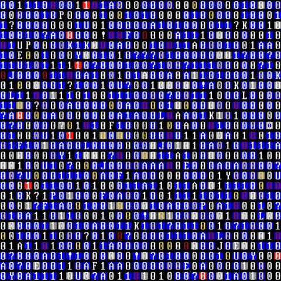

Lab 10 - Javascript Events and Forms

Challenge
Experimented with JavaScript Events and Forms
Problems
We didn't run into any siginificant problems
Reflection
This lab was both easy and extremely informative! The event listener allowed us to
make our most compact code yet. We look forward to figuring out ways to implement these
new commands into our seperate group projects.
Results
Behold.... THE NAME SORTER 2.0!!!!